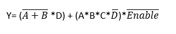
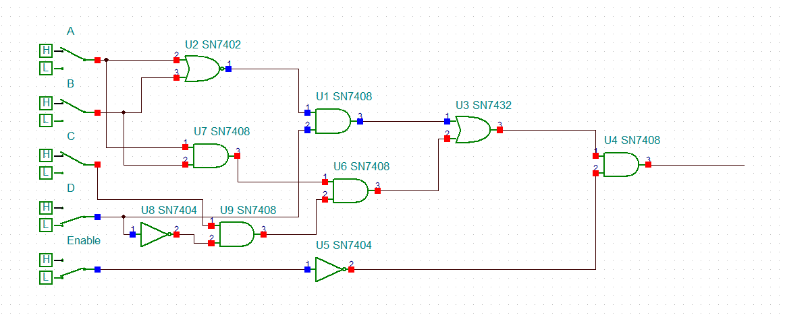

Logikai áramkör
Feladat leírása:
Az áramkör a következő műveletet valósítja meg:

A rendszer bemenetei és vezérlése:
- Bemenetek: A, B, C, D (adat), Enable (vezérlés).
- Engedélyezési feltétel: Enable = Low.
- Működés: Az áramkör kimenete csak alacsony szintű vezérlőjel mellett aktív.
Megvalósítás (Kapcsolási rajz):
Az áramkör logikai kapuk (AND, OR, NOT, NOR) felhasználásával készült.

Igazság tábla
Megjegyzés: Az Enable láb ha 1, akkor sose lesz 1 a Q kimenet. Az alábbi táblázat az aktív (alacsony) Enable szint melletti állapotokat mutatja be.
| A |
B |
C |
D |
EN |
Q |
| 0 | 0 | 0 | 0 | 0 | 0 |
| 1 | 0 | 0 | 0 | 0 | 0 |
| 0 | 1 | 0 | 0 | 0 | 0 |
| 1 | 1 | 0 | 0 | 0 | 0 |
| 0 | 0 | 1 | 0 | 0 | 0 |
| 1 | 0 | 1 | 0 | 0 | 0 |
| 0 | 1 | 1 | 0 | 0 | 0 |
| 1 | 1 | 1 | 0 | 0 | 1 |
| 0 | 0 | 0 | 1 | 0 | 1 |
| 1 | 0 | 0 | 1 | 0 | 0 |
| 0 | 1 | 0 | 1 | 0 | 0 |
| 1 | 1 | 0 | 1 | 0 | 0 |
| 0 | 0 | 1 | 1 | 0 | 1 |
| 1 | 0 | 1 | 1 | 0 | 0 |
| 0 | 1 | 1 | 1 | 0 | 0 |
| 1 | 1 | 1 | 1 | 0 | 0 |